class: center, middle # Unsupervised learning Pierre Ablin .affiliations[  ] --- # Overview: - Dimension reduction methods - Matrix factorization --- # Unsupervised learning We have some data, but no label :( -- - Labelling is often time consuming - Many data are not labelled (e.g. all images in google...) -- Goal of unsupervised learning: Analyse the structure of the dataset -- .center[ <img src="images/catsndogs.png" style="width: 450px;" /> <br/> ] --- # Dimension reduction Data $\mathbf{x}$ lives in dimension $p$ ### Notation: - $\mathbf{x}_i$ is the sample $i$ (vector of size $p$) - $x_i^a$ is the feature $a$ of $\mathbf{x}_i$ (real number) -- **Dimension reduction**: build a transform $\mathbf{z}= f(\mathbf{x})$, where $z$ is in dimension $q < p$, such that most information caried by $\mathbf{x}$ is kept in $\mathbf{z}$ -- Dimension reduction questions: - What kind of transform ? - How to define "information"? --- # Principal component analysis (PCA) - Linear transform - Information measured as power -- We have $n$ samples $x_1, \dots, x_n$ Assume that the dataset is centered ($\sum \mathbf{x}_i = 0$). -- To extract $1$ component: - Look for a projection: $z_i = \mathbf{w}^{\top}\mathbf{x}_i$, where $\mathbf{w}$ is a vector of unit norm - We want to maximize the power $\sum z_i^2$ --- # PCA and correlation - Look for a projection: $z_i = \mathbf{w}^{\top}\mathbf{x}_i$, where $\mathbf{w}$ is a vector of unit norm - We want to maximize the power $P = \sum z_i^2$ -- We have: $$P=\sum (\mathbf{w}^{\top}\mathbf{x}_i)^2 = \sum \mathbf{w}^{\top}\mathbf{x}_i\mathbf{x}_i^{\top}\mathbf{w} = \mathbf{w}^{\top}\left(\sum \mathbf{x}_i\mathbf{x}_i^{\top}\right)\mathbf{w} = \mathbf{w}^{\top}C\mathbf{w}$$ where $C$ is the $p\times p$ matrix $$C = \sum_{i=1}^n \mathbf{x}_i\mathbf{x}_i^{\top}$$ -- $C$ is called the **correlation** matrix --- # Correlation matrix $$C = \sum_{i=1}^n \mathbf{x}_i\mathbf{x}_i^{\top}$$ Diagonal coefficients: -- $C^{aa}= \sum_{i=1}^n (x_i^a)^2$ 'Power' of the feature $a$ -- Off-diagonal coefficients: $C^{ab}= \sum_{i=1}^n (x_i^a)(x_i^b)$ Correlation between feature $a$ and $b$ --- # Correlation matrix .center[ 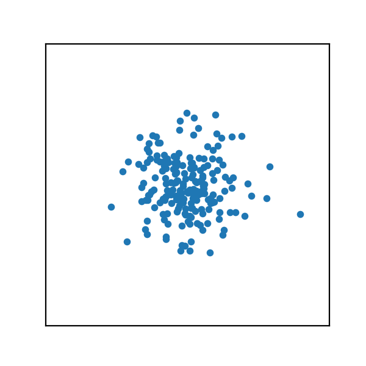 <br/> ] --- # Correlation matrix .center[ 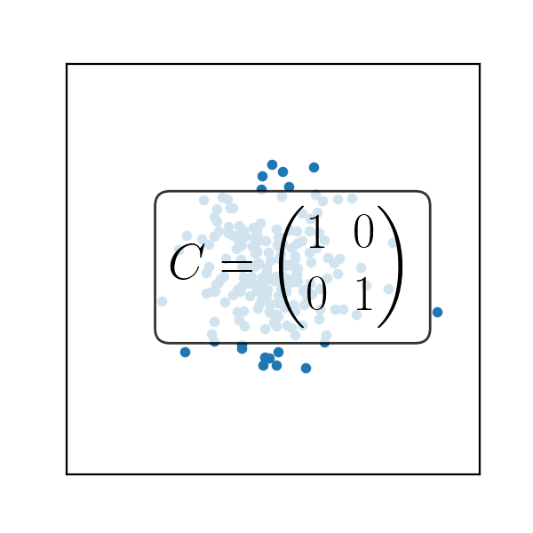 <br/> ] --- # Correlation matrix .center[ <img src="images/correlation_10.png" style="width: 450px;" /> <br/> ] --- # Correlation matrix .center[ 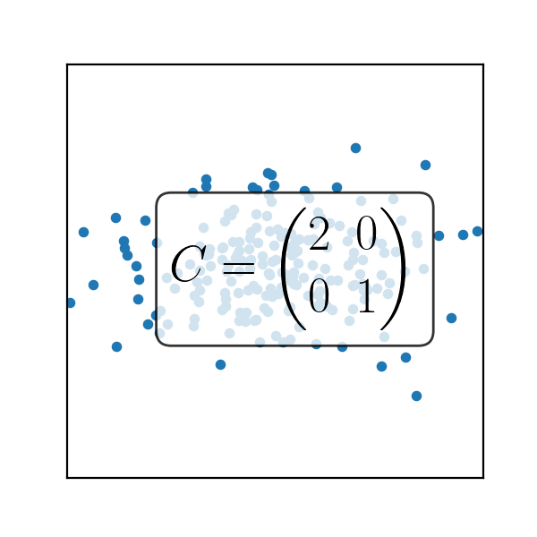 <br/> ] --- # Correlation matrix .center[ 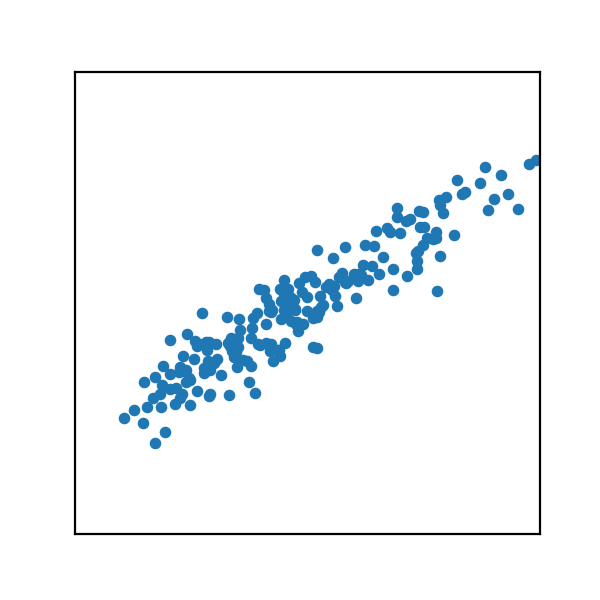 <br/> ] --- # Correlation matrix .center[ 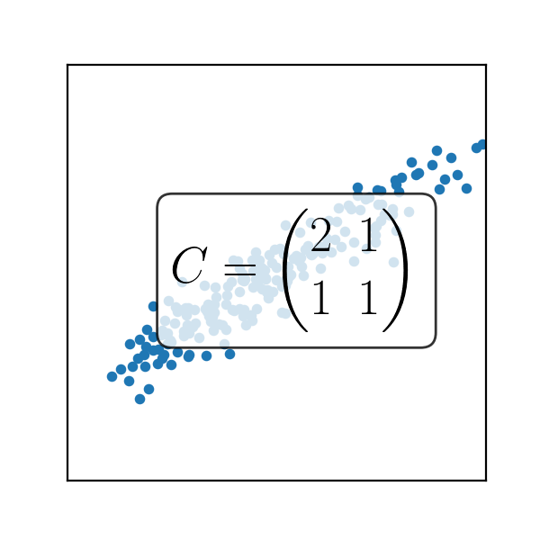 <br/> ] --- # Direction with most power .center[ 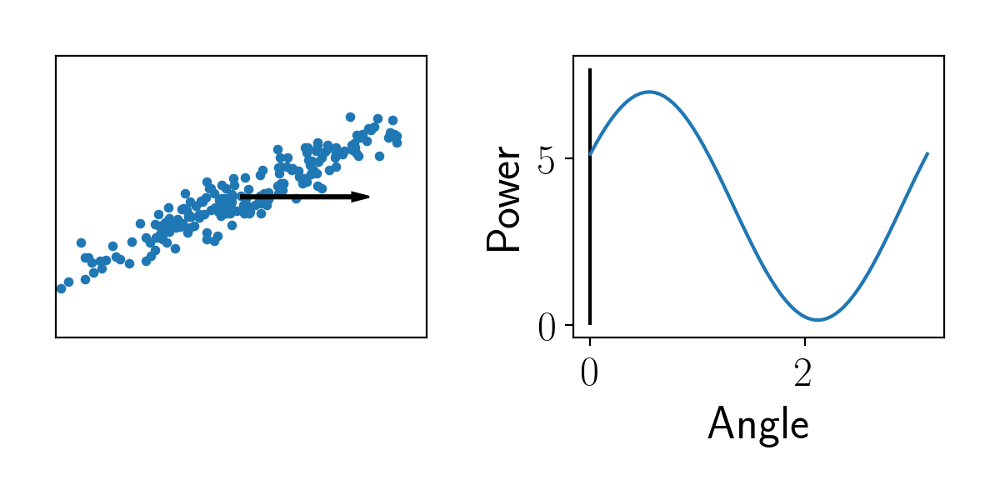 <br/> ] --- # Direction with most power .center[ <img src="images/correlation_pow1.png" style="width: 750px;" /> <br/> ] --- # Direction with most power .center[ <img src="images/correlation_pow2.png" style="width: 750px;" /> <br/> ] --- # Direction with most power .center[ <img src="images/correlation_pow3.png" style="width: 750px;" /> <br/> ] --- # Direction with most power .center[ 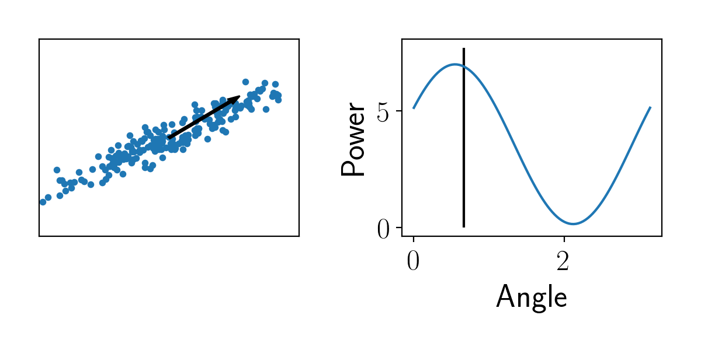 <br/> ] --- # Direction with most power .center[ <br/> ] --- # Direction with most power .center[ <img src="images/correlation_pow6.png" style="width: 750px;" /> <br/> ] --- # Direction with most power .center[ <img src="images/correlation_pow7.png" style="width: 750px;" /> <br/> ] --- # Direction with most power .center[ <br/> ] --- # Direction with most power .center[ 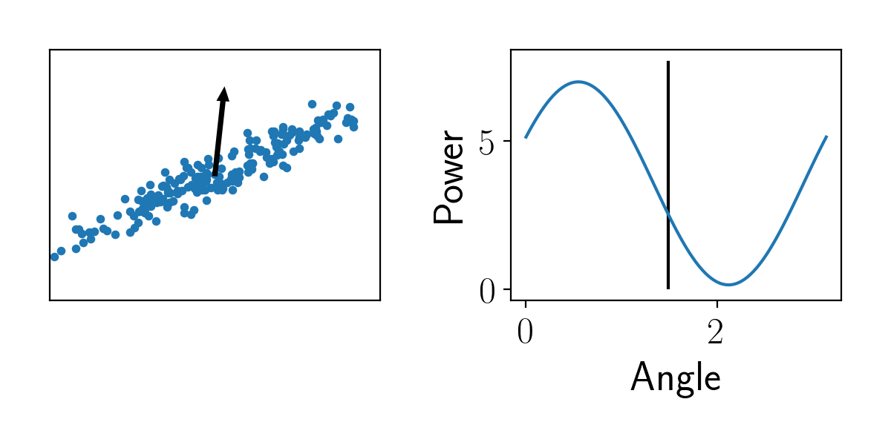 <br/> ] --- # Direction with most power .center[ <br/> ] --- # Direction with most power .center[ <img src="images/correlation_pow11.png" style="width: 750px;" /> <br/> ] --- # Direction with most power .center[ 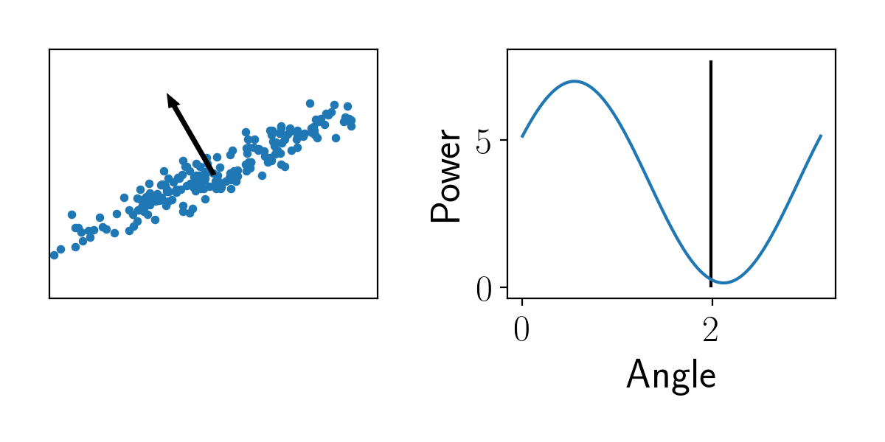 <br/> ] --- # Direction with most power .center[ <br/> ] --- # Direction with most power .center[ <img src="images/correlation_pow14.png" style="width: 750px;" /> <br/> ] --- # Direction with most power .center[ 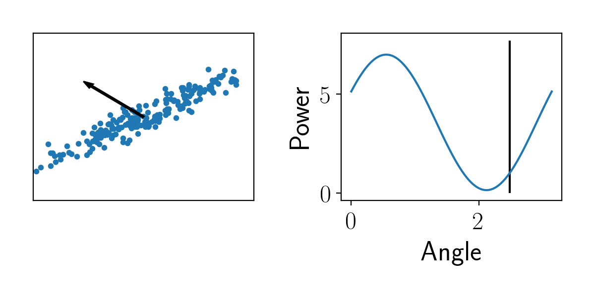 <br/> ] --- # Direction with most power .center[ <img src="images/correlation_pow16.png" style="width: 750px;" /> <br/> ] --- # Direction with most power .center[ <img src="images/correlation_pow17.png" style="width: 750px;" /> <br/> ] --- # Direction with most power .center[ 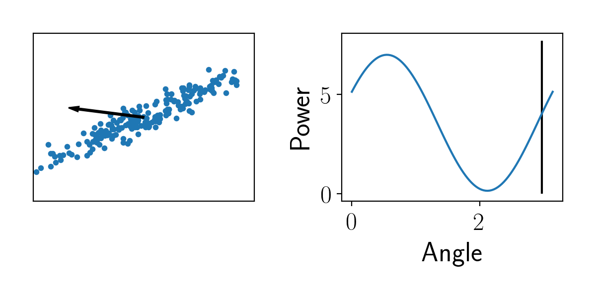 <br/> ] --- # Direction with most power .center[ <img src="images/correlation_pow19.png" style="width: 750px;" /> <br/> ] --- # PCA and eigenvalue decomposition The vector $\mathbf{w}$ that maximizes $\mathbf{w}^{\top}C\mathbf{w}$ is the leading eigenvector of $C$. The corresponding power is the eigenvalue. -- First PCA dimension: $z^1 = \mathbf{w}_1^{\top}\mathbf{x}$ -- Unexplained data: $$\tilde{\mathbf{x}} = \mathbf{x} - z^1 \mathbf{w}_1$$ -- - What if $\tilde{\mathbf{x}} = 0$ ? --- # PCA: other components Unexplained data: $$\tilde{\mathbf{x}} = \mathbf{x} - z^1 \mathbf{w}_1$$ We can repeat the procedure and find $\mathbf{w}_2$ that maximizes the power of $z^2 = \mathbf{w}_2^{\top}\tilde{\mathbf{x}}$ -- Corresponds to the second eigenvector of the covariance matrix. -- You can iterate as long as you want, giving you $q$ coefficients. -- If unexplained data $=0$ with $q$ components, it means that the data is of dim $q$ --- # What is the dimension of real datasets? As we have seen, the covariance matrix is important, its eigenvalues give the correponding powers. Digits dataset: `from sklearn.datasets import load_digits` .center[ 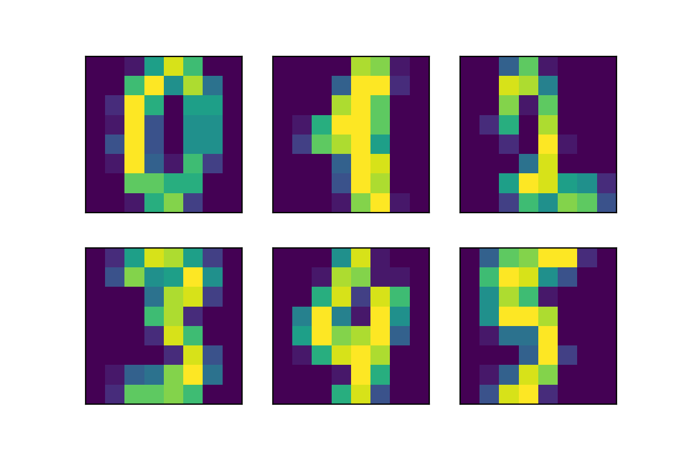 <br/> ] --- # What is the dimension of real datasets? Spectrum of the covariance: .center[ <img src="images/spectrum.png" style="width: 450px;" /> <br/> ] --- # 2-D PCA on digits: .center[ 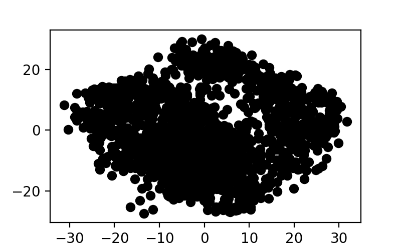 <br/> ] --- # 2-D PCA on digits: .center[ <img src="images/pca_2.png" style="width: 650px;" /> <br/> ] --- # Matrix factorization --- # Another formulation of PCA The data $\mathbf{x}_1,\dots, \mathbf{x}_n$ can be represented as a matrix $X$ of size $p \times n$: each *row* is a sample. -- ## **WARNING!!!!** In `scikit-learn`, the data is represented as $n\times p$ --- # PCA as a matrix factorization The data $\mathbf{x}_1,\dots, \mathbf{x}_n$ can be represented as a matrix $X$ of size $p \times n$: each *row* is a sample. -- - PCA finds a set of weights $\mathbf{w}_1, \cdots, \mathbf{w_q}$, which can be seen as a matrix $W$ of size $p\times q$. - Transformed data, $z^1, \dots, z^q$ can be seen as a matrix $Z$ of size $q \times n$ We have: -- $$X \simeq W Z$$ -- ### Data $X$ is **factorized** as a product of two matrices --- # Matrix factorization: general principle Factorize $X$ as a product $$X\simeq WZ$$ - Factorization can be *undercomplete* : $q \leq p$ - *overcomplete*: $q \geq p$ -- Inherent indeterminacy: If $(W, Z)$ is a factorization of $X$, for $R$ a matrix of size $q\times q$: $$(WQ, Q^{-1}Z)$$ is also a factorization (because $WQQ^{-1}Z = WZ$) --- # Usual matrix factorization methods --- # Sparse Dictionary learning $W$ is called the *dictionary* and $Z$ the *code* -- ### Specificity: The code is **sparse**: - Each $\mathbf{z}_i$ only has a few non-zero coefficients - Each sample $\mathbf{x}_i$ is represented as a linear combination of a **few** elements of the dictionary --- # Sparse dictionary learning: example On image dataset, learned dictionary: .center[ 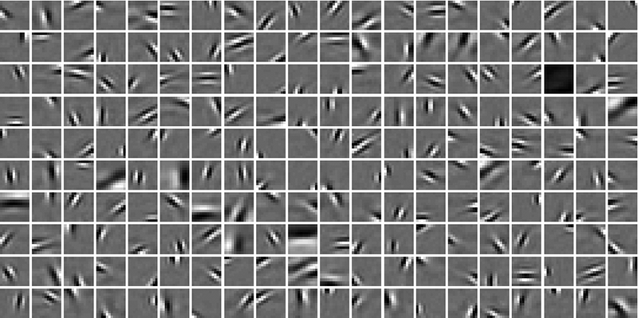 <br/> ] -- ### Gabor filters --- # Non-negative matrix factorization ### Specificity - Works only when the data features are all positive - $W$ and $Z$ contain only positive values --- # Non-negative matrix factorization: applications $X$: spectrogram of a song. $p$ = frequency, $n$ = times .center[ 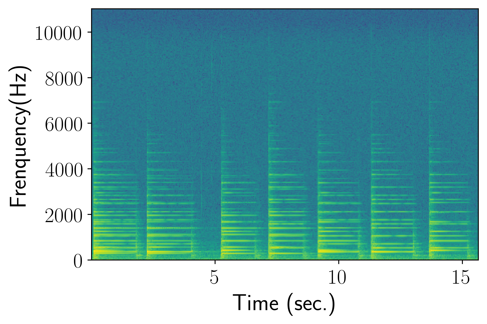 <br/> ] --- # Non-negative matrix factorization: applications - $W$ contains the spectral signatures -- .center[ <img src="images/dict.png" style="width: 600px;" /> <br/> ] -- - $Z$ contains temporal activations -- .center[ 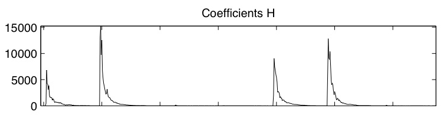 <br/> ] --- # Non-negative matrix factorization: applications .center[ <img src="images/dict.png" style="width: 500px;" /> <br/> ] .center[ <br/> ] ### Corresponds to this signal .center[ 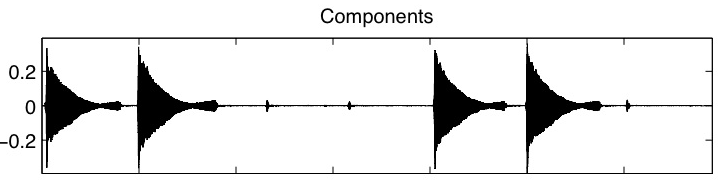 <br/> ] --- # Non-negative matrix factorization: applications - Each element in $W$ corresponds to a distinct frequency signature: ### NMF can separate the musical instruments from each other (drums, piano, etc...) -- This is completely unsupervised ! --- # Independent component analysis ### Specificity - $W$ is square ($p=q$) - The rows of $Z$ are statistically **independent** -- PCA gives decorrelated rows in $Z$. ICA goes further by imposing independence -- ## Independence => decorrelation --- # Power of independence: $$X$$ .center[ <img src="images/data.png" style="width: 600px;" /> <br/> ] --- # Power of independence: $$Z_{PCA}$$ .center[ <img src="images/pca_data.png" style="width: 600px;" /> <br/> ] --- # Power of independence: $$Z_{ICA}$$ .center[ 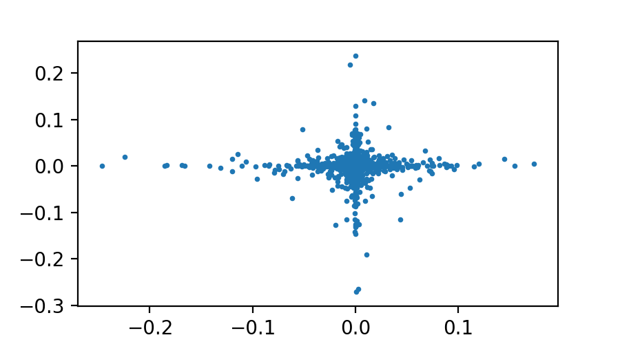 <br/> ] --- ### Electrocardiogram of a pregnant mother .center[ <img src="images/ecg.png" style="width: 400px;" /> <br/> ] --- ### ICA decomposition .center[ <img src="images/ecg_ica.png" style="width: 400px;" /> <br/> ] --- ### ICA decomposition .center[ <img src="images/ica_eeg.jpg" style="width: 600px;" /> <br/> ] --- ### t-SNE .center[ <img src="images/tsne.png" style="width: 600px;" /> <br/> ]